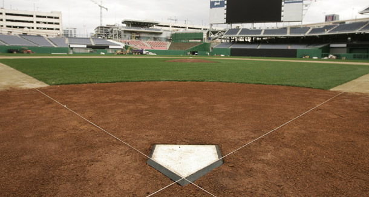

Michael Baker
Career

Throughout my life, I have not had too many jobs. I have only had two, and one of them technically was not real.
My first “job” was working as an umpire in my town’s youth baseball league. I had tons of fun while I was working the field, it was unfortunate however that it was more of a volunteering program that happened to pay, and the fact that that summer was hot and humid.
The second but real job I have now is working in the kitchen of a restaurant. I remember at first being horrified of messing anything up, but now I realize how much I have grown with my confidence. It also helps that all the other workers there are a great and hilarious bunch of people who never make the workplace dull.